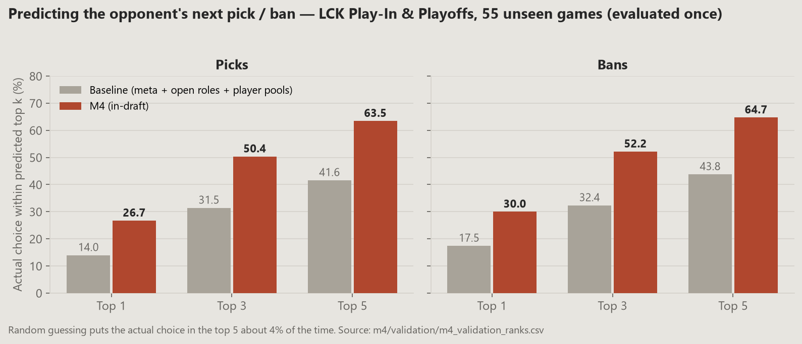
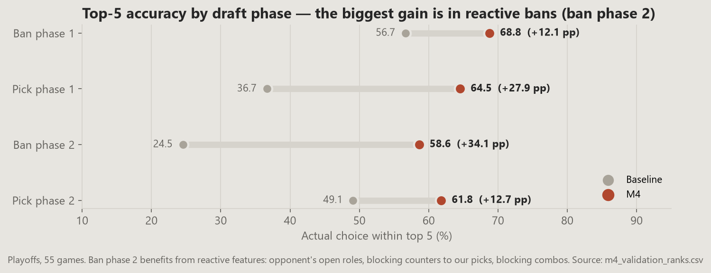
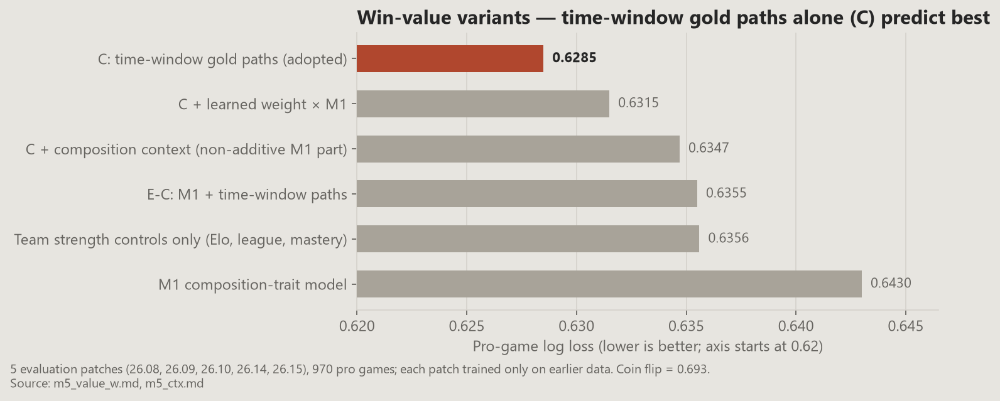
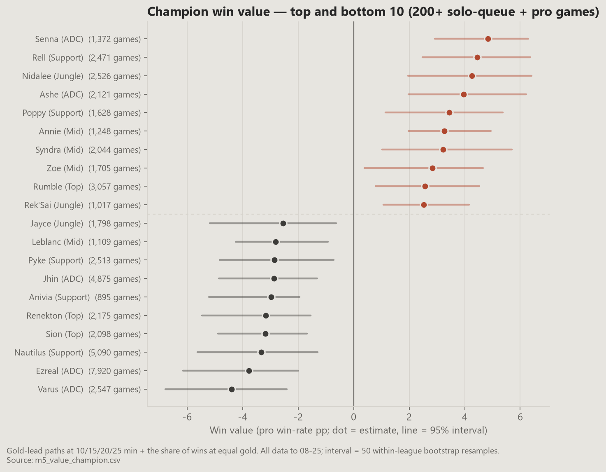
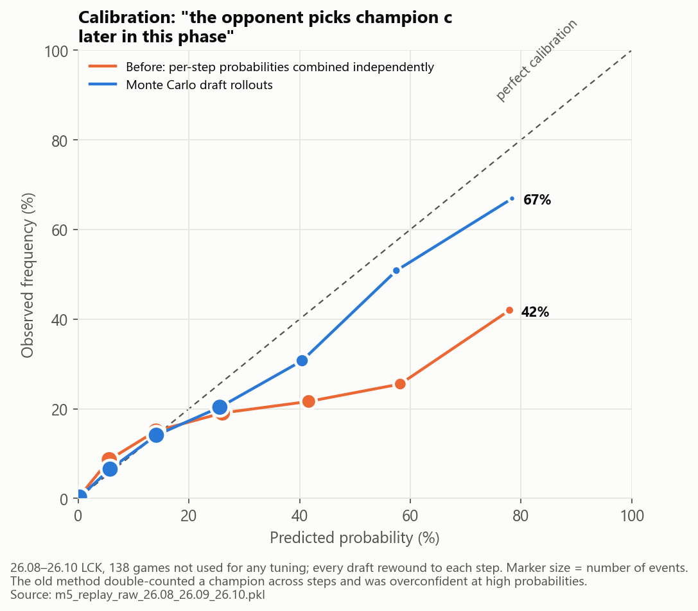
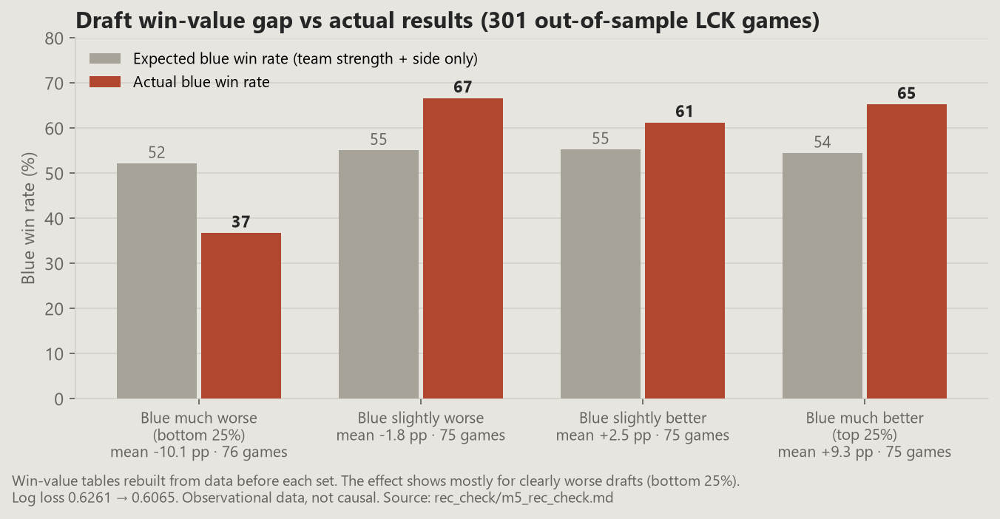
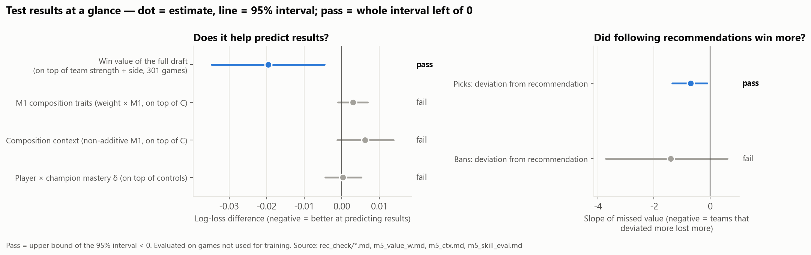

00
Executive summary
Question, method and findings in brief
Pro picks are explained by meta, comfort and reactions to the opponent far more than by the champion that wins most. Adding win value to the opponent model barely moved its accuracy, so "probability of picking" (prediction) and "win value" (recommendation) are kept as two separate models.
Three questions, three outputs
| Question during the draft | Output | How it was checked |
|---|---|---|
| What will the opponent pick or ban next? | M4 pick-choice model: a probability for every legal champion | 55 playoff games, once, after the model was frozen |
| How much does this champion change our chance of winning? | Win value: a champion's share of gold at 10/15/20/25 min plus wins at equal gold | 970 pro games over 5 evaluation patches |
| So what should we ban or pick now? | M5 recommender: plays out the rest of the draft thousands of times per candidate | 301 LCK games, models rebuilt from data before each patch |
Key findings
Opponent prediction holds up on held-out games. On 55 Play-In and playoff games, the actual pick was in the top 5 63.5% of the time and the actual ban 64.7%, against 41.6% and 43.8% for the baseline. Random guessing puts it in the top 5 about 4% of the time.
The probabilities became usable after simulation. Events the old method called "70% or more" happened 42% of the time; with Monte Carlo draft rollouts they happened 67% of the time (138 games never used for tuning).
Draft value predicts results, and straying from the pick recommendation is associated with losing. On 301 out-of-sample LCK games, adding draft value to team strength and side lowered log loss from 0.6261 to 0.6065; the slope of missed value on results was −0.70 [−1.35, −0.11].
The ban ranking did not pass. The slope for missed ban value was −1.40 [−3.71, +0.61], so its interval includes zero. The ban panel in the dashboard says so.
How this is reported
Prediction validated; recommendation an association
The opponent model was frozen and tested once on games it never saw. The recommendation checks use observational games with only team strength (Elo) and side controlled, so they show that following the pick recommendation goes with winning, not that it causes it.
At a glance
01
Overview
What was built, and why prediction and recommendation are separate
A draft has 20 steps: each team bans and picks in a fixed order, and every choice changes what the other side can do. An analyst in the booth needs to know what the opponent is likely to take next and which of our options leaves us with the stronger finished composition.
The obvious approach, ranking champions by win rate, mixes up two different things. Strong teams make their champions look good, and a pro team's choice depends on meta, its players' champion pools and what the opponent just did. So the project keeps a model of what teams do pick (M4) apart from an estimate of what a champion is worth once team strength is controlled (win value), and only the recommender (M5) combines them.
Approach
Models whose reasons can be shown: GLMs (logistic, ridge, elastic net, Poisson) with coefficients and intervals for the value side. LightGBM is mixed into opponent prediction only, where hit rate is the goal. Every split is in time order, and the playoffs stayed closed until the end.
Scope
One input, a daily champion meta score used as an M4 feature, was produced by a teammate and is credited in the data table. The project also includes source-backed player and team profiles (section 05 D) and a local draft dashboard.
Main result: the opponent model is the best-validated part. The pick recommender passes an out-of-sample check as an association; the ban recommender does not.
02
Business question
What the analyst needs, and what would make the answer misleading
Given the draft so far, what should T1 ban or pick next?
Concretely: for each legal champion, how likely is the opponent to take it later in the draft, and how much does taking or denying it change the expected win rate of the finished ten-champion draft?
Two traps confounding & leakage
Team strength. A champion picked mostly by strong teams wins often whatever it does. Win value therefore controls for pre-game Elo, player mastery and, in solo queue, the number of pros in the game.
Future data. A random train/test split lets future games predict past ones. Every split here is by date; patch names (26.01–26.16) are only labels for time windows.
Training data to
Aug 25
Final test from
Aug 26
Draft steps
20
Final test runs
1
03
Data
Sources for the draft models, and what could not be used
Sources for the draft models
| Data | Source | Size | Used in |
|---|---|---|---|
| Pro game records | Oracle's Elixir CSV | 5 leagues, 2,055 games (LCK 447) | M1–M3, win value |
| LCK draft order | Leaguepedia Cargo API | 503 games × 20 steps | M4 |
| Solo queue | Riot Games API (match-v5 + timeline) | 27,177 games of 58 players | M0 attributes, M1–M3, mastery |
| Patch changes | Riot patch notes (KR) | 26.01–26.21, 834 champion changes | M0 rework detection, M4 |
| Champion info | Data Dragon, Meraki role classes | 173 champions | Name mapping, M0 checks |
| Rosters and schedule | Leaguepedia | 10 teams, 67 players, 188 matches | Lineups, series |
| Meta score | Teammate's output | 111 match days × 172 champions | M4 meta feature |
Why solo queue. The LCK has only 447 games, far too few to measure champion traits and matchups. The researched players' own solo-queue games add volume while staying close to the pro meta, so the models are layered: solo queue → five pro leagues → LCK, with each layer pulled harder toward zero.
What could not be used collection rules
Collection followed robots.txt (with an RFC 9309 parser written for the project), waited 1–2 seconds between requests and stopped a site at the first 403, 429 or captcha. The LoL Esports live stats feed, which has pro kill and position events, is a private API, so pro games use Oracle's Elixir summary stats (such as 15-minute gold) instead. 2025 data was dropped because the 2026 draft rules (First Selection, fearless) differ.
Known gaps
The solo-queue match-list API cut off older games for 28 of 89 accounts, so early-season mastery may be underestimated. Two of the 67 players who played have no solo-queue account found, and one LCK game is missing from Oracle's Elixir, so only its draft is available.
04
Validation design
Four time windows, each with one job
| Split | Period | Used for |
|---|---|---|
| Training | Start of the 2026 season to Aug 25 | All model fitting |
| Rehearsal | LCK 26.14, 26.15 and Road to MSI | Choosing settings only (regularisation, feature groups); coefficients refit each time on earlier data |
| Extra evaluation | 26.08, 26.09, 26.10 | Re-checking win value and the replay test on games never used for tuning |
| Final test | 55 Play-In and playoff games from Aug 26 | M4 frozen first, then evaluated once; nothing changed afterwards |
① The rehearsal only uses what was known at the time
Champion attributes, composition predictions and M4 were rebuilt for each rehearsal patch from data before that patch.
② Choosing among many variants on one rehearsal is optimistic
That is why M4 was checked again on the playoffs, and the win-value and replay results on patches the rehearsal never used. The extra patches changed one decision (section 05 B).
③ Pass rules were written before running
For the tie-zone, composition-context and ban checks, the pass rule (for example "upper bound of the 95% interval below zero") was recorded in the decision log before the check was run.
05
Analysis
Opponent model, win value, recommender and research profiles
A · M4: what will the opponent pick or ban?
At each draft step the model learns which of the roughly 120–134 legal champions the team actually chose. It started as a conditional logit (softmax within the step) and grew one feature group at a time, compared on the rehearsal: meta, pick-order fit, player pools and mastery, open roles, fearless exclusions, reactive features (answers to the opponent's picks, blocking combos and counters), the first- and second-pick team's ban habits, and the earlier games of the same series.
| Rehearsal stage (LCK 26.14, 26.15, RTM) | Picks top 5 | Bans top 5 | What changed |
|---|---|---|---|
| Baseline (meta + open roles + player pools) | 45.6% | 50.1% | |
| Conditional logit, first version | 57.6% | 54.9% | Order, player pools, meta |
| + reactive features | 61.9% | 64.3% | Second ban phase 33.0 → 57.4% |
| Pick LightGBM (5 leagues, LCK weight 3) | 67.2% | Non-linearity +3.6 pp, five leagues +1.0 pp | |
| Final (+ series features, ban ensemble) | 66.5% | 69.8% | Frozen here |
Tried and left out (within ±0.5 pp on the rehearsal): win value, team-specific coefficients, blind-pick safety, champion embeddings, research mentions, international and cup events, and series-level fearless planning. Picks use LightGBM, which clearly beat the conditional logit (62.6 → 67.2%); bans use a z-score ensemble of the linear model and LightGBM, because the linear model was better there.


B · Win value: what a champion is worth once team strength is controlled
A single 0/1 result is noisy. Instead, gold difference at 10, 15, 20 and 25 minutes is converted to a "winning state" on the log-odds scale, and each time point is regressed on champion-by-role with ridge, with team strength controlled. Games that ended before a time point are set to ±3.5. A separate logistic term gives back the share of wins at equal gold, so champions that win without leading in gold are not penalised.
| Variant (5 evaluation patches, 970 pro games) | Log loss |
|---|---|
| M1 composition-trait model only | 0.6430 |
| Controls only (league, Elo, mastery) | 0.6356 |
| M1 + time-window gold paths (best on two patches) | 0.6355 |
| Time-window gold paths without M1 (adopted) | 0.6285 |
Why the adopted variant changed. On the two rehearsal patches alone, M1 + paths was best. With five patches, M1 was weak early in the season, and a learned weight on M1 came out near zero on every patch (−0.43 to 0.22). Choosing on two patches had let luck in, so M1 was dropped. A coin flip is 0.693.


C · M5: playing out the rest of the draft
An earlier version added up per-step probabilities as if they were independent. It turned "30%, 30% and 20% at three later steps" into 57%, although a champion can only be taken once and might be banned in between. The recommender now simulates instead.
- From the current draft state, M4 gives both teams' probabilities for every remaining step (opponent = prediction, T1 = usual habits).
- For each T1 candidate, M4 is recomputed from the state right after that choice, so the opponent's likely reaction is included.
- The rest of the draft is played out 1,500–4,500 times with no repeats, lowering probabilities as roles fill. All candidates share the same random numbers.
- Each finished draft gets a win rate from the Elo gap and side, summed champion win values, and player-by-champion mastery × 0.32; the results are averaged.
- Pick candidates whose gap to the top one is within the win-value uncertainty form a tie zone, ordered by how often T1 usually picks them.
win rate = σ( base + (Σ T1 values − Σ opponent values) / 25 ) base = 0.093 × side + 2.32 × (T1 Elo − opponent Elo) / 400

D · Research profiles
Alongside the draft models, profiles of 58 players and 10 teams summarise how articles, interviews and fan communities see each of them, with a source, a date and a verbatim quote behind every claim. Claude sub-agents did only two steps, extracting claims and drafting profiles; search, storage, quote checking and evaluation were code.
| Measure | Value | Threshold |
|---|---|---|
| Claims extracted | 10,497 | |
| Quotes found in the source text | 94.0% | 70% |
| Claims supported by the quote (human sample of 256) | 98.4% | 80% |
| Claims attributed to the right person (same sample) | 94.9% | 85% |
Checked against game records, sources' overall rating of a player moved with the player's usual lane gold (rank correlation +0.34, p 0.01, 57 players), but ratings of laning or specific champions barely did (+0.04 to +0.13). Adding research mentions to M4 did not improve it, so profiles appear only as evidence in the dashboard.
06
Results
Out-of-sample checks of the recommender
Expected win rates computed with tables built from all data up to Aug 25 are in-sample, and the real result of an untaken pick is never observed. So for 8 LCK windows (301 games), the win-value table and M4 were rebuilt from data before each window, and two questions were asked.
| Check | Result | Reading |
|---|---|---|
| ① Does draft value predict results on top of Elo and side? | Log loss 0.6261 → 0.6065, difference −0.0196 [−0.0347, −0.0046] | passes |
| ② Did teams that strayed from the pick recommendation lose more? | Slope −0.70 [−1.35, −0.11], p 0.04, over 3,020 pick turns | passes |
| Ban check, same design | Slope −1.40 [−3.71, +0.61], over 3,020 ban turns | fails |
The effect comes mostly from clearly worse drafts: in the bottom quarter of draft-value gap, blue was expected to win 52% on team strength and side and actually won 37%. On the two windows not used for any win-value setting (26.07, 26.16; 70 games) the log-loss difference was −0.0406. The effect is small and varies by window (no help on 26.09 and Road to MSI).


Why the ban ranking failed
The first half of the ban score is right: when the top ban candidate was left open, the opponent took it 23.0% of the time against a predicted 22.9%. The second half, how much a ban lowers the opponent's draft value, did not show up in results. The ban ranking is also more concentrated than picks (top 5 champions take 50.8% of first places), and 18.7% of first-ban top choices were champions the banning team later picked itself, a cost the score does not count because our own side is held fixed.
Reported as
Pick recommendations: an association that holds out of sample. Bans: reference only.
The dashboard keeps the ban score but labels it as not validated and points to the opponent's predicted picks instead.
07
Business insights
What this means for draft preparation
① Predict and value separately
What a team will pick and what wins are different quantities. Win value added almost nothing to M4, and pro pick shares (top 5 champions about 15% of picks) are far more spread than the value-only ranking. A preparation sheet should show both columns rather than one blended score.
② Earlier games in the series are strong evidence
39.5% of bans from game 2 onward repeat a ban the same team made earlier in the series. In a fearless series, the previous games are among the best predictors of the next draft.
③ Pair effects show in lane gold, not in results
Strong lane counters move 15-minute gold by about ±150–250, and the pair terms raised lane-gold R² from 0.066 to 0.074, but adding them to result prediction made it worse. Matchups are useful as draft-time evidence, not as a win-rate adjustment.
Recommendations
01 Use the opponent model for ban planning
- Who
- Draft analysts
- What
- Plan bans from the opponent's predicted picks and their threat, not from the ban-value ranking
- Why
- The opponent probabilities passed the held-out test and matched observed take rates (23.0% vs 22.9%); the ban-value ranking did not pass
02 Treat pick recommendations as a shortlist
- Who
- Coaching staff
- What
- Read the tie zone and the evidence chips (main, mastery, synergy, matchup) together, rather than taking the single top card
- Why
- The top recommendation leans on a few champions with high single-champion value; the tie-zone rule only reduced the top-5 share from 39.0% to 35.8%
03 Get event-level pro data before adding composition effects
- Who
- Analytics lead
- What
- License pro event data (kills, positions, objectives with timestamps) through the official route
- Why
- Composition traits, their non-additive part and lane matchups all failed to improve pro predictions with summary stats alone; finer outcomes are the most direct way to test them again
08
Limitations
What the design cannot show
No causal claim for the recommendations
Teams that strayed further from the pick recommendations lost more (slope −0.70, p 0.04), but only Elo and side are controlled, so other factors may be mixed in. The best-validated part is the probability of what the opponent will pick.
Win value is per champion
Composition interactions enter only through role filling in the rollouts. That is why recommendations lean toward a few champions (Ashe, Rumble, Syndra).
Rollouts are partly static
Champions picked inside a rollout don't feed back into M4's features; only the one-move lookahead does. T1's remaining turns are filled from its usual habits.
Some overconfidence remains
Events called 50–70% happened 44–51% of the time.
Profiles describe opinion
The research profiles show how sources see a player, not the player's actual skill. Human review covered 256 claims and was applied directly to 9 of the 68 targets.
09
Tools & Skills
What was used, and for what
Programming & data handling
Modelling
Validation
Practices
10
Repository
Code, design notes and full write-up
Code & outputs on GitHub →The repository contains the pipeline and model code, the draft dashboard and scouting-report code, the README write-up (in English and Korean) with a demo video, and design notes and a decision log in Korean. Collected source text and game data are kept out of the repository, so the models and dashboard cannot be run from it alone.